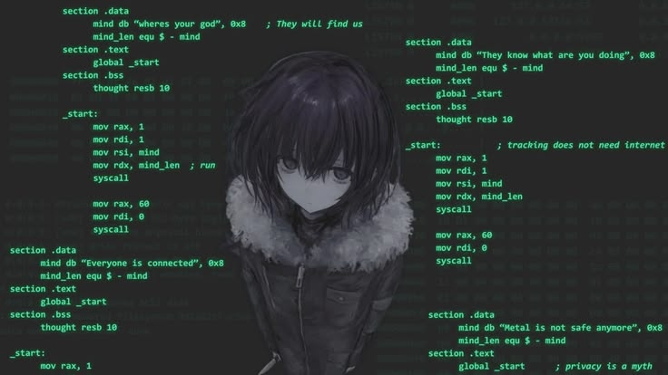

Intro
Welcome to my portfolio! I am an Information Technology (B.Tech) undergraduate at BIT Sindri (Class of 2030) with a strong passion for software engineering, problem-solving, and building modern applications.
I am deep-diving into object-oriented programming (OOP) in Java, Python scripting, and game development logic in C#, while actively building developer workflows with Git and GitHub.
Work & Projects

I believe in hands-on learning and writing clean, structured code. Here is a glimpse into what I work on:
- Java & OOP: Mastering Object-Oriented Programming principles, algorithms, and application logic using IntelliJ IDEA.
- Python & Automation: Building functional scripts, small applications, and automation tools to solve real-world problems.
- Game Development & C#: Exploring game design logic, graphics pipelines, and C# programming basics.
- Version Control Workflows: Utilizing Git Bash, GitHub, and Terminal for seamless project tracking and repository management.
You can track my live projects, code repositories, and developer progress directly on my GitHub Profile.
About Me
Beyond writing code, I am building a solid computer science foundation at BIT Sindri. My aim is to become a well-rounded software developer capable of building scalable solutions and interactive applications.
Academic Highlights: Cleared JEE Main with a 91.8 Percentile and achieved 94.2% in 10th grade.
Creative Pursuits: When I'm not in front of VS Code or IntelliJ, I love singing and performing on stage! I share my vocal covers and creative projects online.
Contact
Feel free to reach out if you want to collaborate on a coding project, talk about software development or game dev, or just connect professionally!